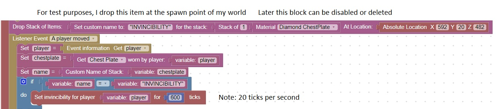

Special Maze Armor, Invincibility Chestplate
Imagine that there is an obstacle that is so overpowering (such as a room full of differing mobs),
that the only way a player can get through the room is to be invulnerable to damage
That is the purpose of this special armor item.

When you are wearing this item, you cannot be damaged by fire, water, arrows, players, or mobs
It is very over powered which is why it must be removed from inventory if worn to complete a challenge.